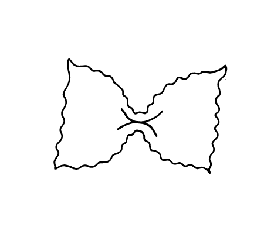

Discription:
Farfalle are a type of pasta commonly known as bow-tie pasta or butterfly pasta. The name is derived from the Italian word farfalle . In the Italian city of Modena, farfalle are known as strichetti. A larger variation of farfalle is known as farfalloni, while the miniature version is called farfalline. Farfalle date back to the 16th century in the Lombardy and Emilia-Romagna regions of Northern Italy. Note that farfalle are not related to the similar-sounding farfel, an egg-barley pasta used in Jewish cuisine.

-
begginermaster
-
smalllarg
-
shortlong

140 pieces

7-8 minuts